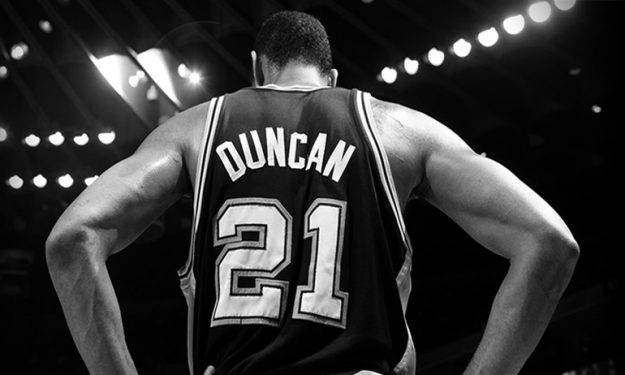

A Little More on Timmy D
The most famous basketball player that has ever hailed from the US Virgin Islands, Tim Duncan is a type of player we might never see in the NBA again. Even though the likes of Yao Ming, Shaq, Shawn Bradley, and some more might have a couple of inches on him, the 6'11" Duncan arguably played like the tallest player in the NBA. Especially in the second half of his career, he would very rarely throw down any flashy put-back dunks or intense blocks, but was content with looking like a walking tree and executing his smooth off-the glass hook or jumpshot.
